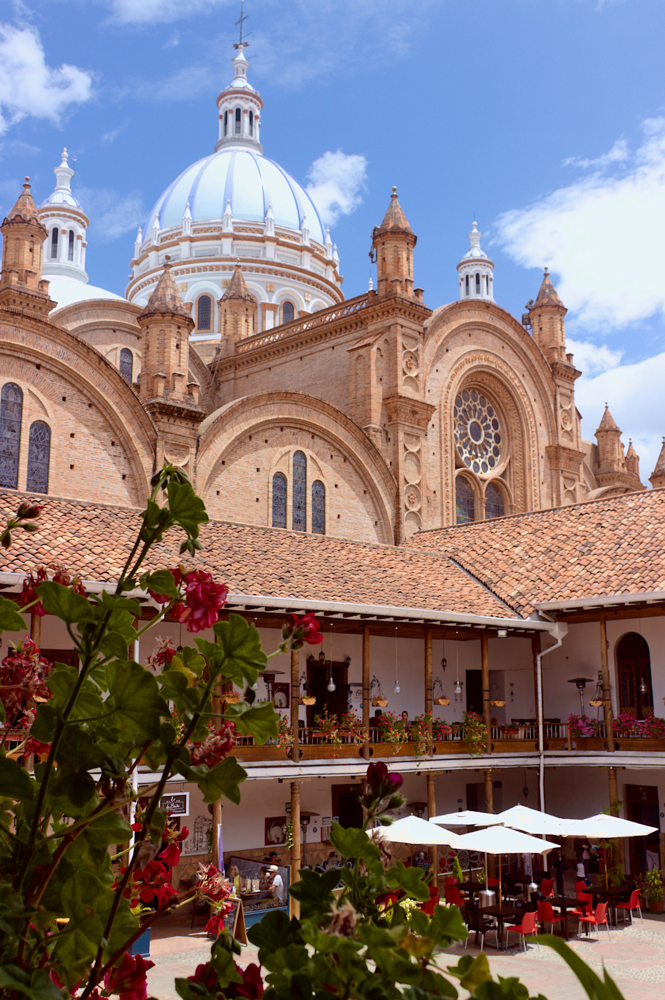

Lugares más visitados del Azuay

Catedral de Cuenca
Parque Nacional El Cajas

Chorro de Girón
AZUTURISMO.EC
El Azuay es una provincia ubicada en el sur de
Ecuador,
en la región Sierra del país. Su
capital es la ciudad de Cuenca, que
también
es una de las ciudades más importantes y
turísticas de Ecuador.
Catedral de Cuenca
Parque Nacional El Cajas
Chorro de Girón